Chandails
Le tricot du moment
Un duo de cardigans à carreaux, tricotés avec soin pour les tout-petits — parmi les pièces dont je suis la plus fière. Une création personnelle!
Tricot artisanal
Tricots faits à la main avec soin et passion.
Chandails · Châles · Bas · Tuques et accessoires
Voir mes créations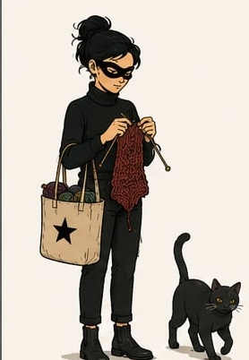
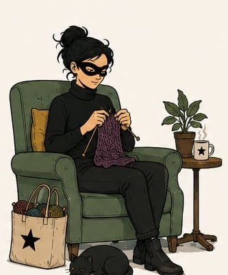
À propos
Je tricote depuis mon enfance — et j'en apprends encore chaque jour ! Chaque projet est réalisé à la main, avec une attention particulière aux détails et au choix des fibres. J'aime créer des pièces confortables, durables et uniques, qui accompagneront leurs propriétaires pendant de nombreuses années.
J'aime les défis : ceux qui demandent de l'attention pour le motif, le point ou l'agencement des couleurs.
Mes créations
Chandails, châles, bas, tuques, vêtements pour bébés et bien plus — un aperçu des pièces qui prennent vie entre mes mains.
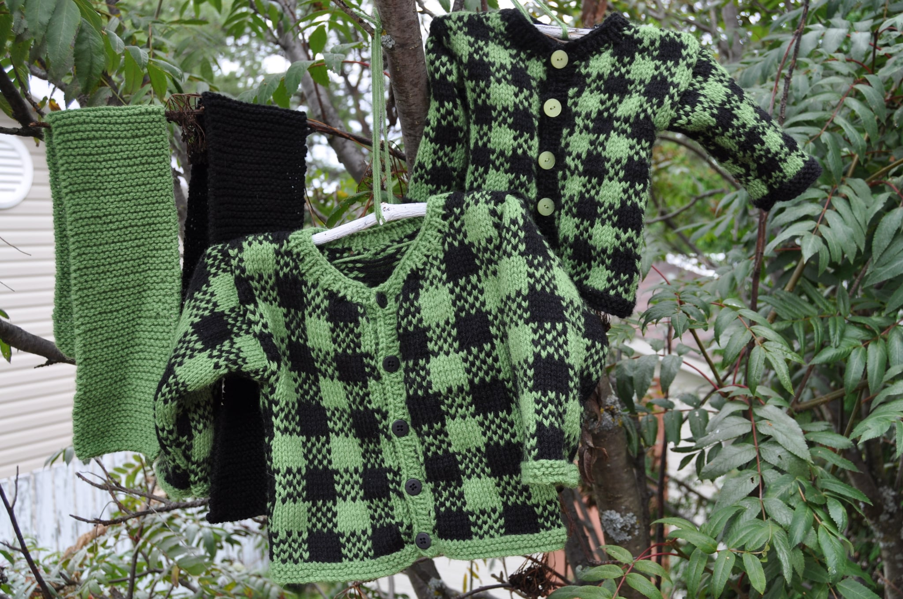
Chandails
Un duo de cardigans à carreaux, tricotés avec soin pour les tout-petits — parmi les pièces dont je suis la plus fière. Une création personnelle!
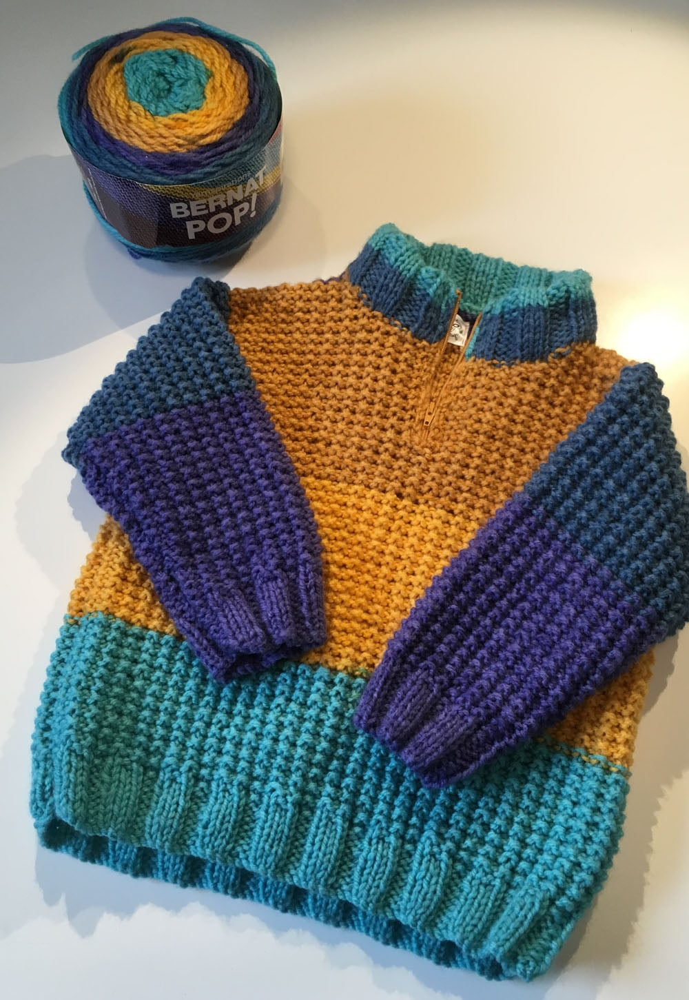
Pulls, cardigans et gilets pour toutes les saisons, dans des teintes qui durent.
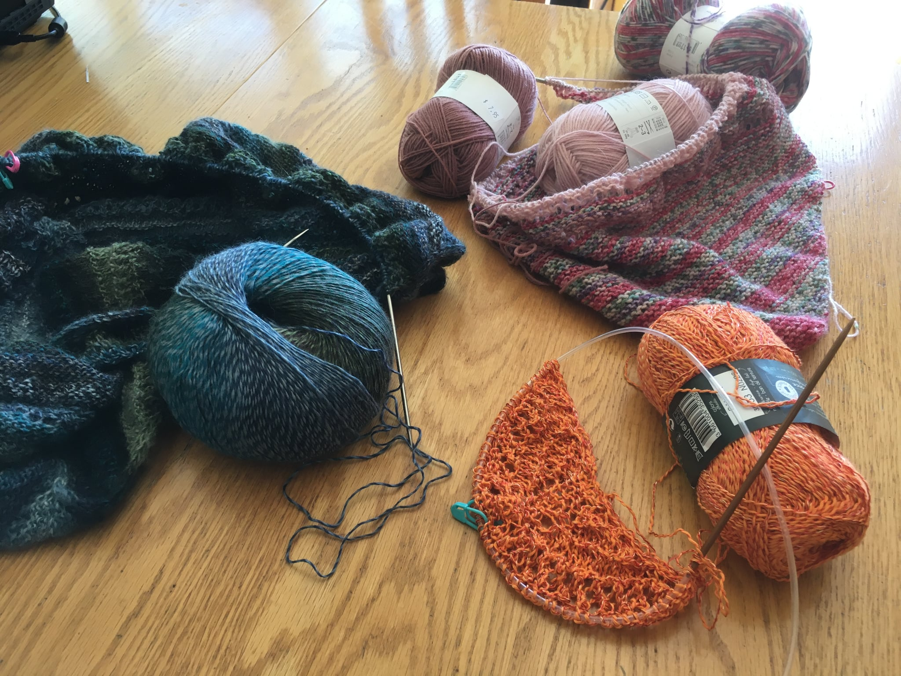
Pour envelopper les épaules, légers ou plus dense, selon la saison.
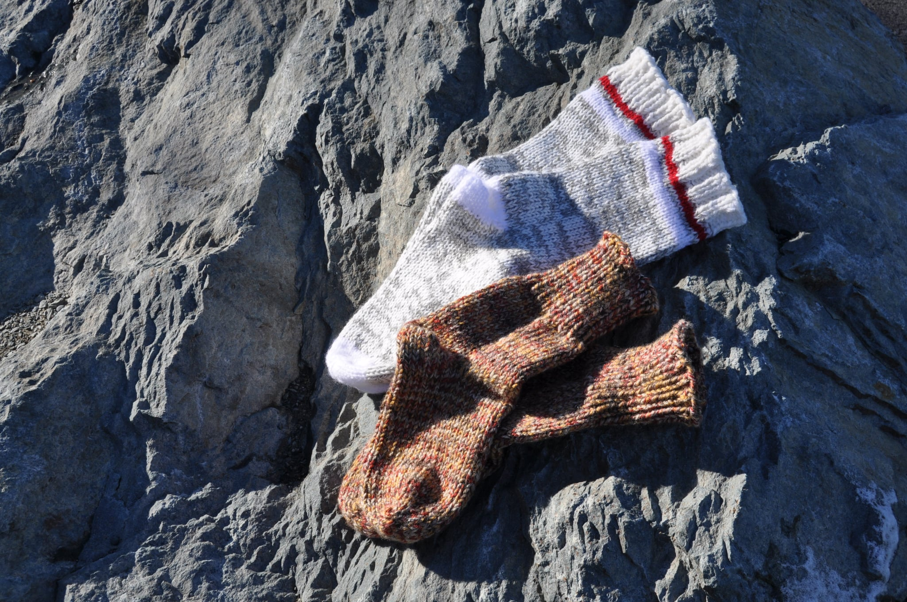
Chaussettes bien chaudes, dans des laines douces au toucher.
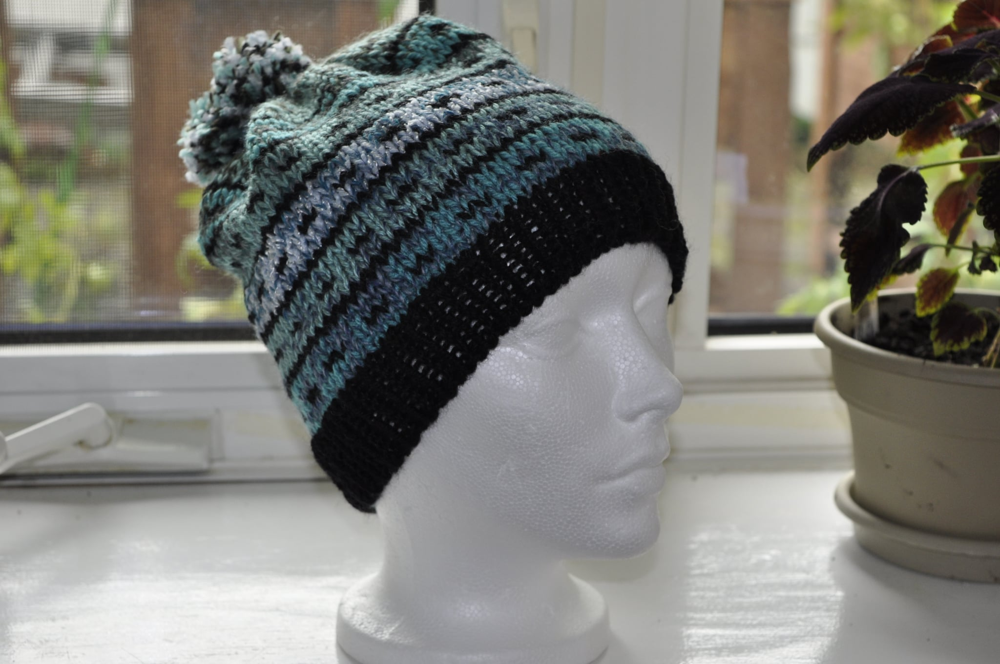
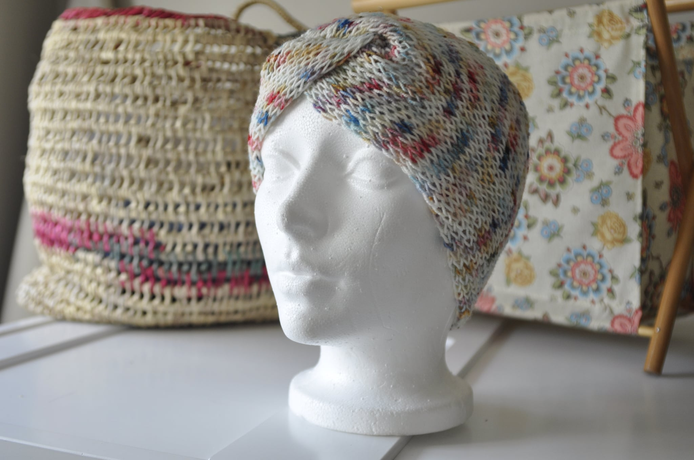
Pour braver l'hiver avec style.
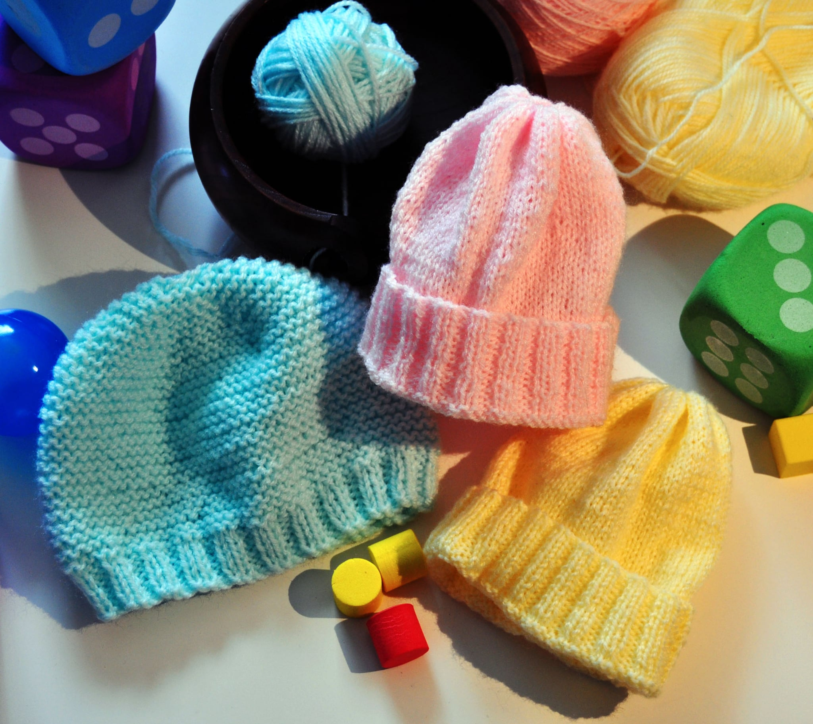
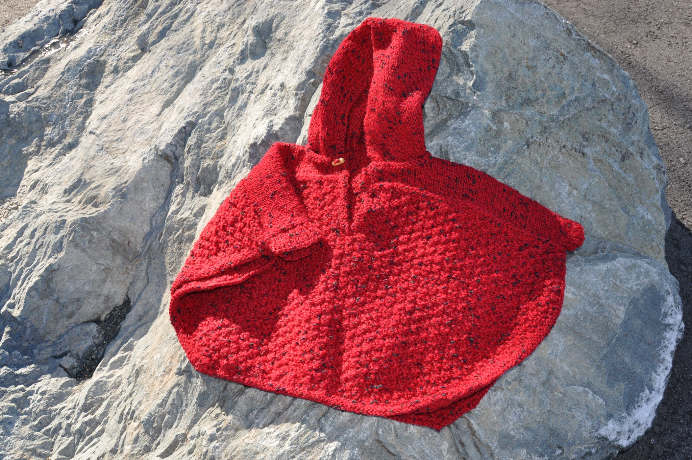
Des tricots tout doux pour les tout-petits.
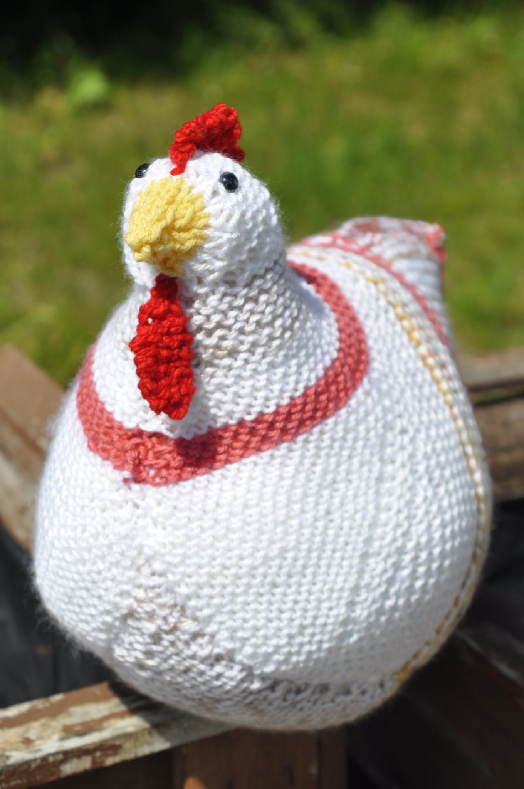
Toujours là pour tenir compagnie, beau temps mauvais temps.
Les matières
Je préfère tricoter avec des laines ni trop fines ni trop grosses : j'oublie donc les projets qui nécessitent une grosseur « Lace », « Bulky » ou plus imposante encore. J'apprécie particulièrement les grosseurs « Sport » et « DK ».
Selon le modèle, je privilégie les fibres naturelles d'origine animale — laine de mouton, alpaga, chèvre — ou végétale, comme le coton et le lin. J'aime aussi la fibre synthétique, surtout pour les vêtements qui doivent passer à la machine.
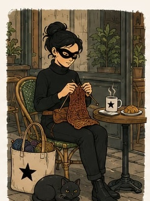
Questions
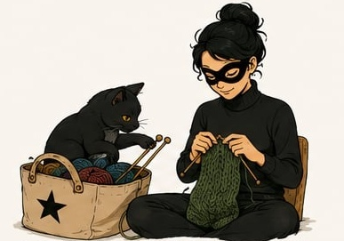
Tout dépend du modèle et de la grosseur de laine. Un chandail pour enfant prend environ un mois, tandis que pour un adulte, il faut souvent compter le double, voire le triple.
Non, car le résultat est souvent loin de l'idée que s'en faisait la personne qui commande. Je préfère proposer des pièces déjà confectionnées.
Ça dépend de la fibre utilisée — le mieux est de se référer à l'étiquette, ou de me poser la question directement.
D'autres questions ? Contactez-moi par courriel.
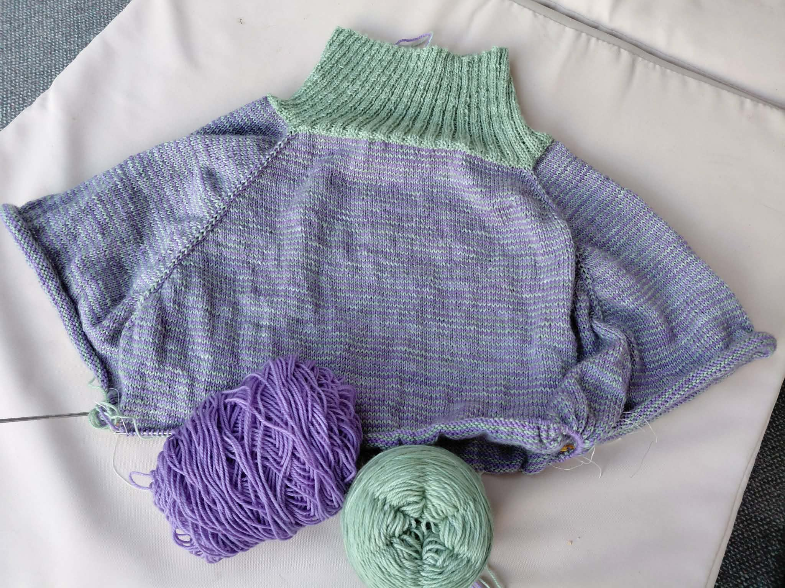
En ce moment
Je tricote le chandail « November Sky » de Drops Design, avec les laines de « Un p'tit brin farfelu ».
Modèle « top-down », à tricoter en circulaire.
Contact
Écrivez-moi, ce sera un plaisir d'échanger.
Également présente sur Facebook.
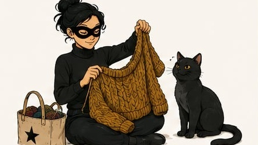